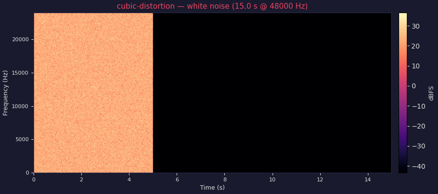
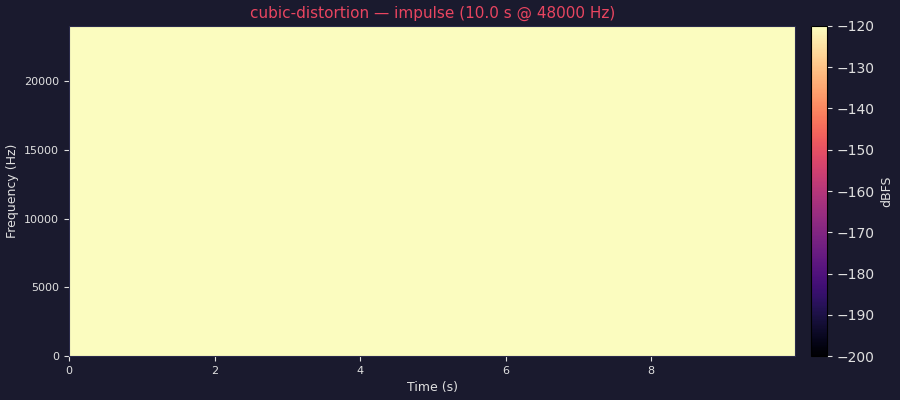
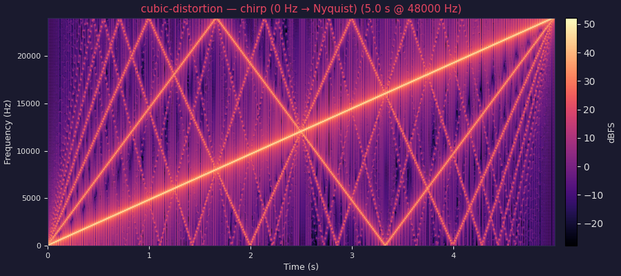

2026-05-07 04:56 UTC · commit 501dcc1 · compiled with 501dcc1 · crag standard-graph · 48000 Hz · 1 channel
Live Preview
Loading WASM…
min: 0 | max: 1 | default: 1
min: 1 | max: 20 | default: 4
min: 0 | max: 1 | default: 1
min: 0 | max: 1 | default: 0
Samplers
Select a test signal or upload a custom WAV file, then click
Load to bind it to the sampler before or during playback.
Not loaded.
Analysis
Input
Audio Source
Delay Line
Delay Read
Delay Write (↺)
Processor
Sum / Mix
Subgraph Ref
Output
White Noise (5 s → decay)

Impulse Response

Chirp (0 Hz → Nyquist over 5 s → decay)

CPU Target
IPC
Cycles / block
Cycles / sample
Insns / block
Relative throughput
Intel Haswell (x86-64-v3)x86-64
1.248
96.5
0.1885
259
Intel Skylake-AVX512 (x86-64-v4)x86-64
1.435
64.2
0.1253
259
AMD Zen 3 (znver3)x86-64
2.385
43.3
0.0846
259
ARM Cortex-A57 (AArch64)aarch64
1.112
95.3
0.1862
245
ARM Neoverse N1 (AArch64)aarch64
1.098
61.0
0.1191
245
Block size: 512 samples at 48 kHz. Metrics are static estimates from llvm-mca (steady-state throughput). IPC = instructions per cycle; Cycles/block = throughput cycles for one 512-sample block; Cycles/sample = Cycles/block ÷ 512.
Meters
progress0
min: 0 | max: 1
wave_player0
min: 0 | max: 1
cubic_distortion0
min: 0 | max: 1
Parameters
Index
Name
Min
Max
Default
Unit
0
loop
0
1
1
1
drive
1
20
4
2
wet_level
0
1
1
3
dry_level
0
1
0
Algorithm Description
Cubic Soft Clipper
Polynomial waveshaper based on the cubic function. Unlike hard clipping
(which produces a discontinuous first derivative) or tanh saturation (which
requires a transcendental function), the cubic waveshaper is an algebraic
polynomial that can be evaluated with two multiplications and a subtraction
per sample.
Algorithm:
For the pre-clipped input u = hard_clip(drive * x, 1.0):
y[n] = (3/2) * u[n] - (1/2) * u[n]^3
This formula maps the interval [-1, 1] monotonically onto [-1, 1]:
- u = 0 → y = 0 (identity at the origin)
- u = 1 → y = 1 (peaks map to full scale)
- u = -1 → y = -1 (odd symmetry preserved)
The response is "softer" than tanh at small amplitudes and "harder" (more
abruptly saturated) near the clipping boundary. It generates odd-order
harmonics (3rd, 5th, 7th …) much like tanh but with a slightly different
harmonic balance: the cubic transfer function contains only a 3rd-harmonic
distortion term, while higher harmonics arise from cascaded application or
higher-order polynomials.
Implementation details:
The input is pre-clipped to [-1, 1] before the polynomial to prevent
|u| > 1, which would make the cubic diverge. With |u| ≤ 1:
y = (3/2)*u - (1/2)*u^3
= u * (3/2 - (1/2)*u^2)
Implemented as:
u = crag.hard_clip(drive * x, 1.0)
u2 = crag.audio_mul(u, u) // u^2
half_u2 = crag.scale(u2, 0.5) // u^2 / 2
half_u3 = crag.audio_mul(half_u2, u) // u^3 / 2
scaled_u = crag.scale(u, 1.5) // 3u/2
y = crag.sum(scaled_u, neg(half_u3))
Parameters:
drive [1, 20] – pre-clip gain (default 4.0)
wet_level [0, 1] – distorted signal level (default 1.0)
dry_level [0, 1] – clean (direct) level (default 0.0)
Usage (after crag.include):
%out = crag.subgraph_ref "cubic_distortion"(%in)
: (!crag.audio<f32, 48000, 1>) -> !crag.audio<f32, 48000, 1>
This file contains only a named subgraph; it is not directly compilable as
a standalone module. Include it from another module via:
crag.include "standard-graphs/distortion/cubic-distortion.crag.mlir" as "cubic_distortion"